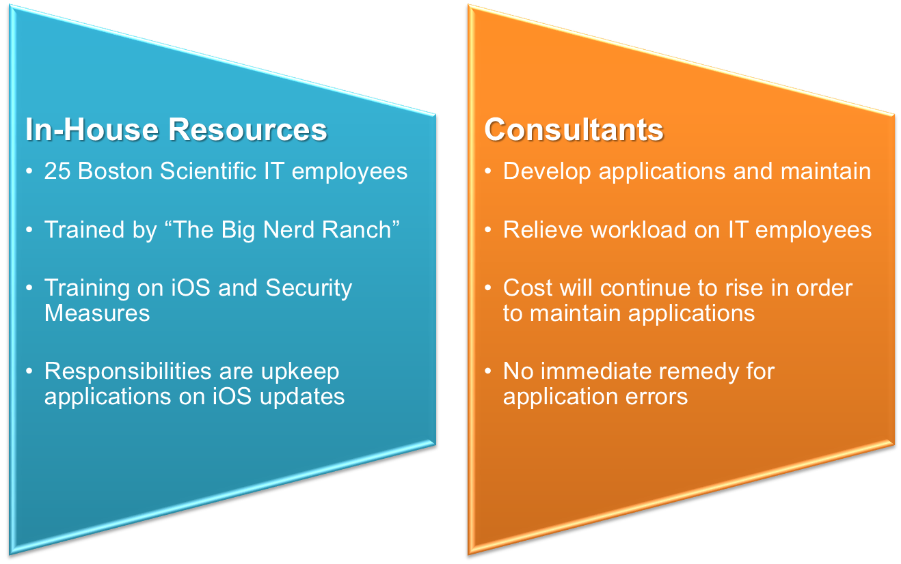
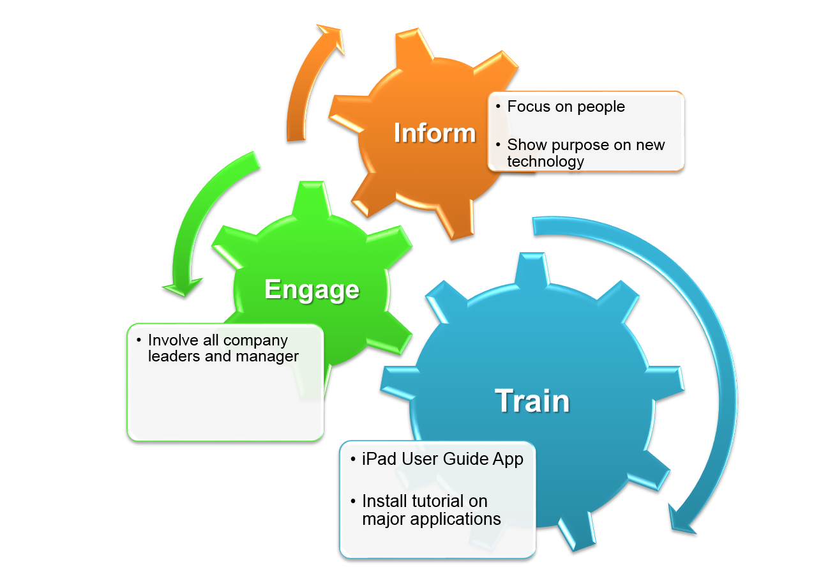
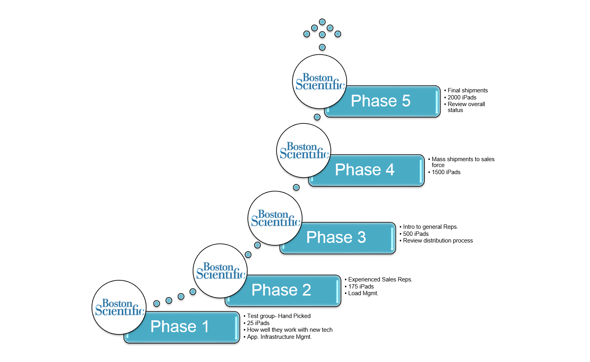
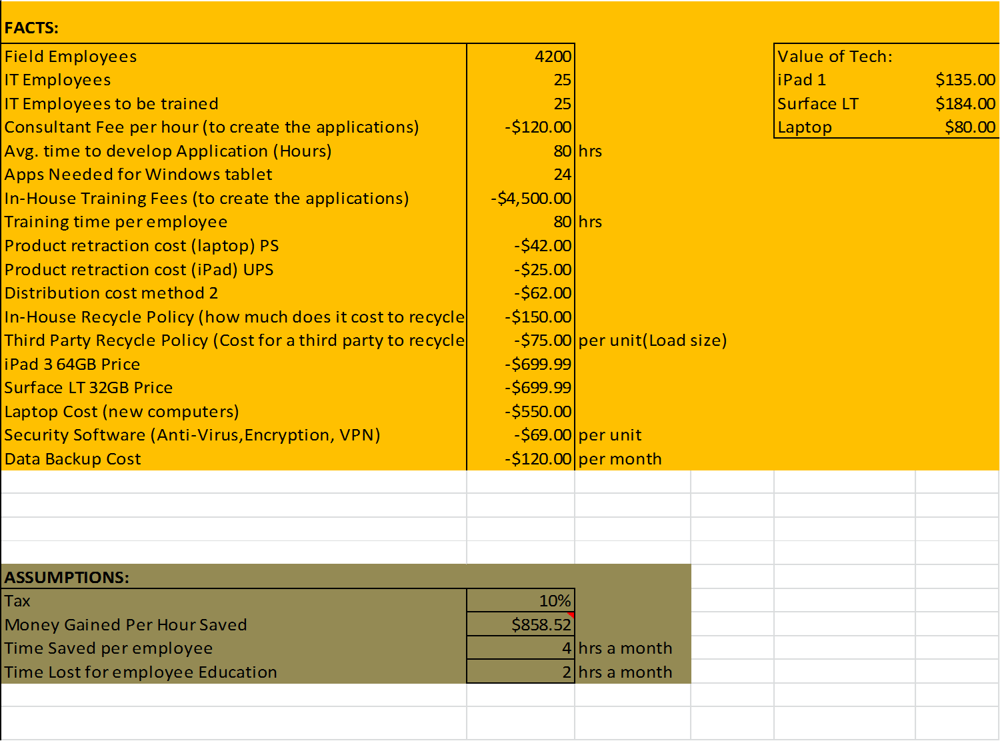
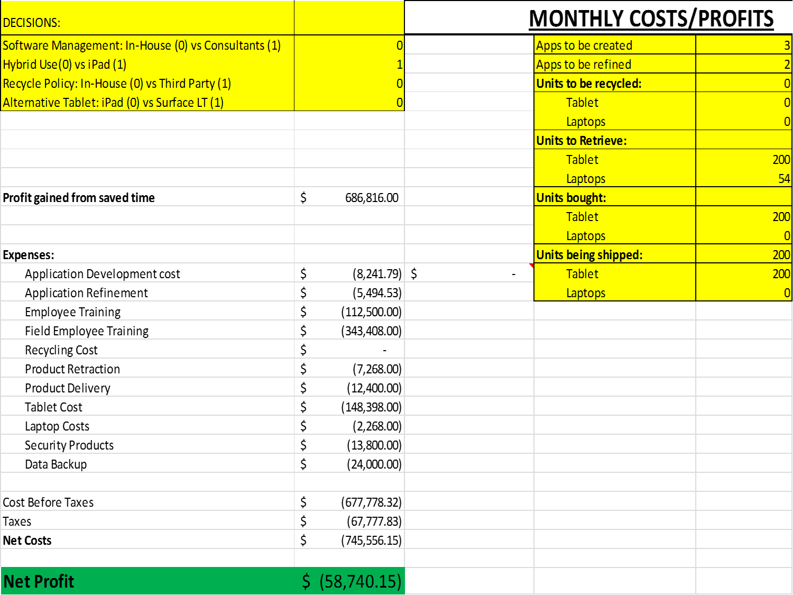
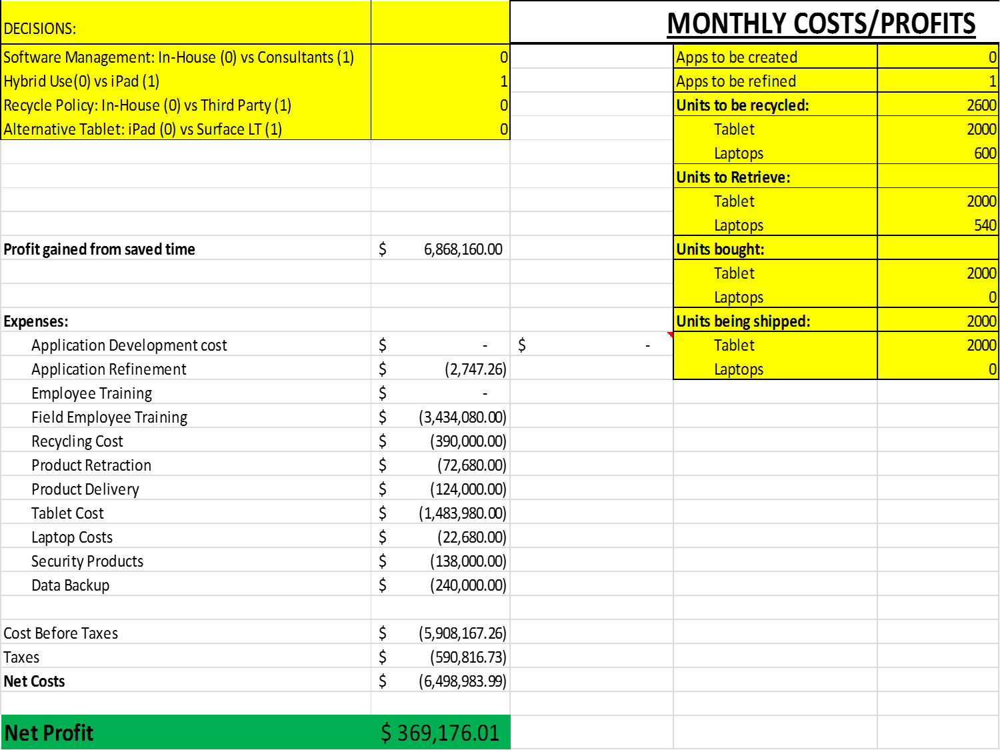
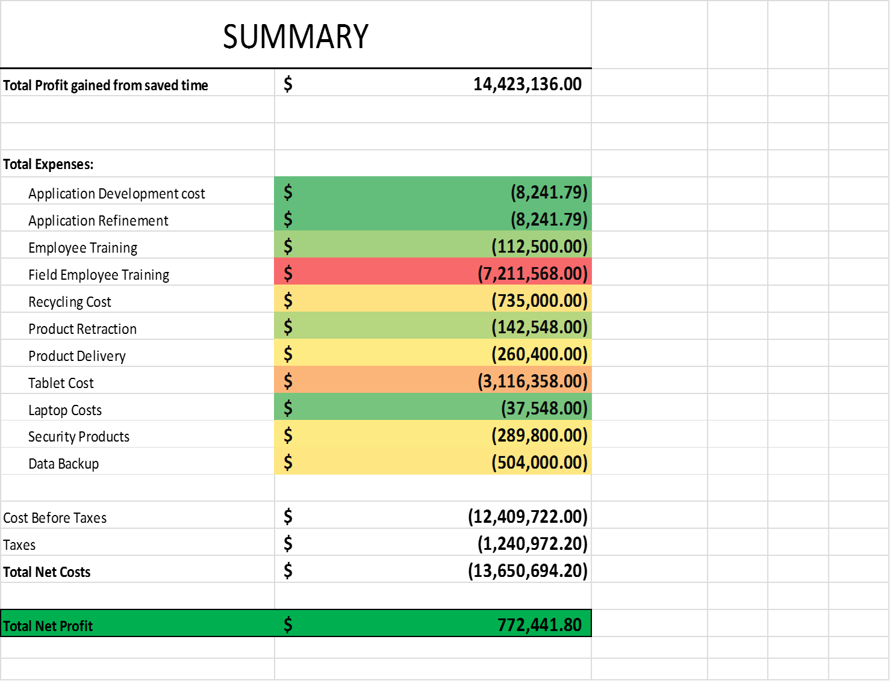

Boston Scientific Case Study
Technology Implementation Program
Presented by: Jasmine McElroy, Zuri Hunter and Alexander Roberts
Overview
- Case Overview
- Problem Statement
- Decisions
- Assumptions & Constraints
- New Technology Implementation
- Old Technology Disposal
- Implementation Schedule
- Financial Analysis
- Conclusion
Case Overview
- 4200 people that generate $7.5 billion of revenue per year
- Sales Representatives- Sell products to hospitals
- Field Clinical Representative- test implanted devices during patient check-ups
The Backbone to Boston Scientific is the Sales Organization
Field Sales Personnel
- December 2010: 64GB first generation iPad rollout to U.S. sales organization
- More recently: iPad 1s, 2s, and 3s rolled out to other divisions and geographies.
- Positive Outcome:
- Decreases in device boot time
- Increases in battery life and portability
New Technology for Sales Organization
So....What is the problem?
iPad Project Mission
To leverage mobile technology to improve global sales efficiency while reducing sales force bureaucracy by improving access to commonly used tols for sales preparation and administrative activities.
Business Benefit
To increase revenues derived from enhanved relationships between Sales Representatives
Problems:
- User Experience
- Application Development
- Regulatory Compliance
Decisions
Option 1: Laptop & iPad4
Pros
- Some applications function on both platforms
- Users familiarity
- Infrastructure and framework laid out
- Full Microsoft Office capabilites
Cons
- Defeats the concept of mobility
- Challenges in converting iOS applications to windows based
- iPad lack fundamental applications for sales representatives
Option 2: Microsoft Surface LT
Pros
- Operating system Windows Based
- Full function of Microsoft Office
- Allows intranet application to function
Cons
- Need develop framework for tool
- Implement training on usage
- Costly to convert 24+ iOS based applications to Windows based (iSell, Pages, iBook and etc.)
Option 3: iPad4
Pros
- User familiarity
- Quick access to multiple applications
- Capacity with 16GB to 64GB
- Infrastructure and framework laid out
Cons
- Certain applications do not open on Safari
- No official Microsoft Office application
- Updates with iOS platform may cause problems with non-apple applications
The Final Decision
iPad 4
- Framework Established
- Familiarity of Device
- Enhanced Mobility
- Application Implemented
Assumptions & Constraints
General
- Approximately 25 IT Boston Scientific employees work on "Application Development & Management."
- Each employee is given 1 iPad for the unit ratio to be 1;1
- UPS will be our shipping partner
- Each employee will generate $859 an hour based off of 4,200 employees generating 7.5 billion dollars a year
Technical
- The time it takes to create and refine an application can be estimated based off of online application developers for iPhone apps.
- Each employee saves 5 hours a month of wasted time when using only an iPad instead of both a tablet and laptop
New Technology Implementation
Application Development Gaps (Management)
UPS
- Global foundation
- Standardized shipping
- Ships to local UPS offices
- Reliable
Our Core Steps
Old Technology Disposal
In With The New Out With The Old
Old Technology Disposal
- Collection
- Mixed Internal Sanitization
- Pure External Sanitization
Recycling/Selling
- Gazelle
- LTE (Laptop Trader Express)
- Goodwill
Implementation Schedule
Timeframe
Financial Analysis
Constraints
Constraints cont.
Actual Costs
Actual Costs cont.
Summary
Financial Conclusion
Consultants vs. Internal Resources
- Initial loss in profit for Internal Resources
- Long Term Profit is greater for Internal Resources
Conclusion
- Exclusive 4th Generation iPad use
- Data sanitization to be handled by internal network
- Old hardware to be sold to technology companies for reuse
- Maintain an internal group to handle the software management
- Focus on people, not just technology for implementation
Thank You!
Fragments
Hit the next arrow...
... to step through ...
... a fragmented slide.
Fragment Styles
There's different types of fragments, like:
grow
shrink
fade-out
current-visible
highlight-red
highlight-blue
Transition Styles
You can select from different transitions, like:
None -
Fade -
Slide -
Convex -
Concave -
Zoom
Themes
reveal.js comes with a few themes built in:
Black (default) -
White -
League -
Sky -
Beige -
Simple
Serif -
Blood -
Night -
Moon -
Solarized
Slide Backgrounds
Set data-background="#dddddd" on a slide to change the background color. All CSS color formats are supported.
Image Backgrounds
<section data-background="image.png">Tiled Backgrounds
<section data-background="image.png" data-background-repeat="repeat" data-background-size="100px">Video Backgrounds
<section data-background-video="video.mp4,video.webm">... and GIFs!
Background Transitions
Different background transitions are available via the backgroundTransition option. This one's called "zoom".
Reveal.configure({ backgroundTransition: 'zoom' })Background Transitions
You can override background transitions per-slide.
<section data-background-transition="zoom">Pretty Code
function linkify( selector ) {
if( supports3DTransforms ) {
var nodes = document.querySelectorAll( selector );
for( var i = 0, len = nodes.length; i < len; i++ ) {
var node = nodes[i];
if( !node.className ) {
node.className += ' roll';
}
}
}
}
Code syntax highlighting courtesy of highlight.js.
Marvelous List
- No order here
- Or here
- Or here
- Or here
Fantastic Ordered List
- One is smaller than...
- Two is smaller than...
- Three!
Tabular Tables
| Item | Value | Quantity |
|---|---|---|
| Apples | $1 | 7 |
| Lemonade | $2 | 18 |
| Bread | $3 | 2 |
Clever Quotes
These guys come in two forms, inline:
“The nice thing about standards is that there are so many to choose from”
and block:
“For years there has been a theory that millions of monkeys typing at random on millions of typewriters would reproduce the entire works of Shakespeare. The Internet has proven this theory to be untrue.”
Intergalactic Interconnections
You can link between slides internally, like this.
Speaker View
There's a speaker view. It includes a timer, preview of the upcoming slide as well as your speaker notes.
Press the S key to try it out.
Export to PDF
Presentations can be exported to PDF, here's an example:
Global State
Set data-state="something" on a slide and "something"
will be added as a class to the document element when the slide is open. This lets you
apply broader style changes, like switching the page background.
State Events
Additionally custom events can be triggered on a per slide basis by binding to the data-state name.
Reveal.addEventListener( 'customevent', function() {
console.log( '"customevent" has fired' );
} );
Take a Moment
Press B or . on your keyboard to pause the presentation. This is helpful when you're on stage and want to take distracting slides off the screen.
Much more
- Right-to-left support
- Extensive JavaScript API
- Auto-progression
- Parallax backgrounds
- Custom keyboard bindings